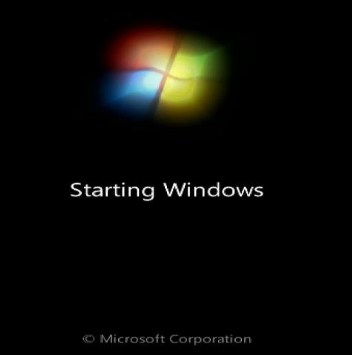
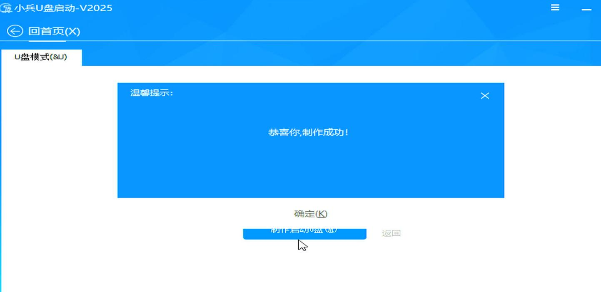
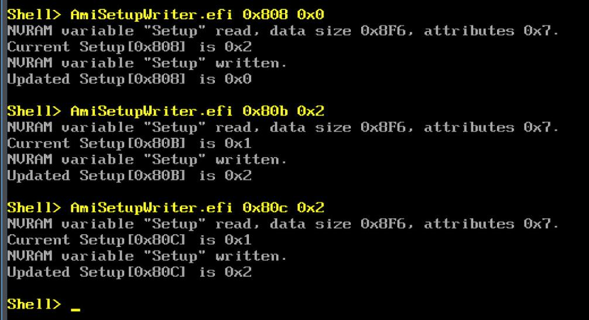
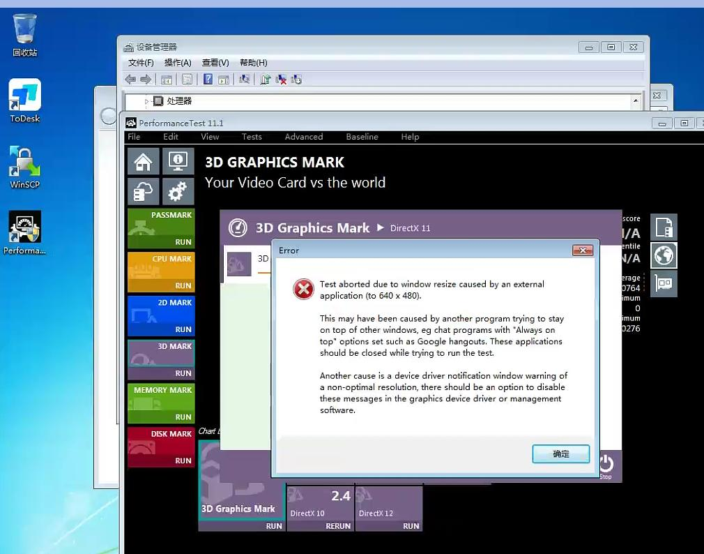
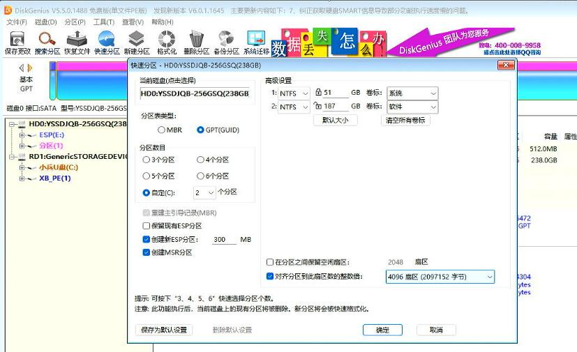
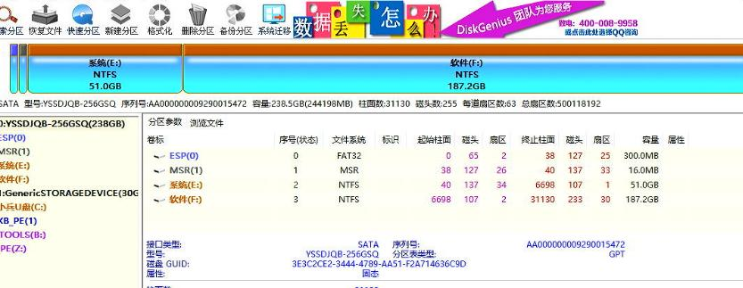
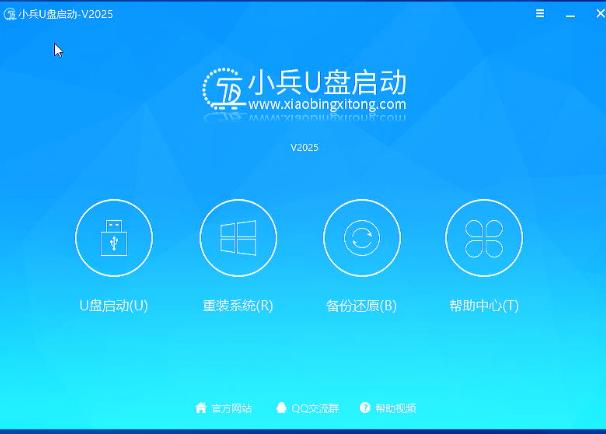
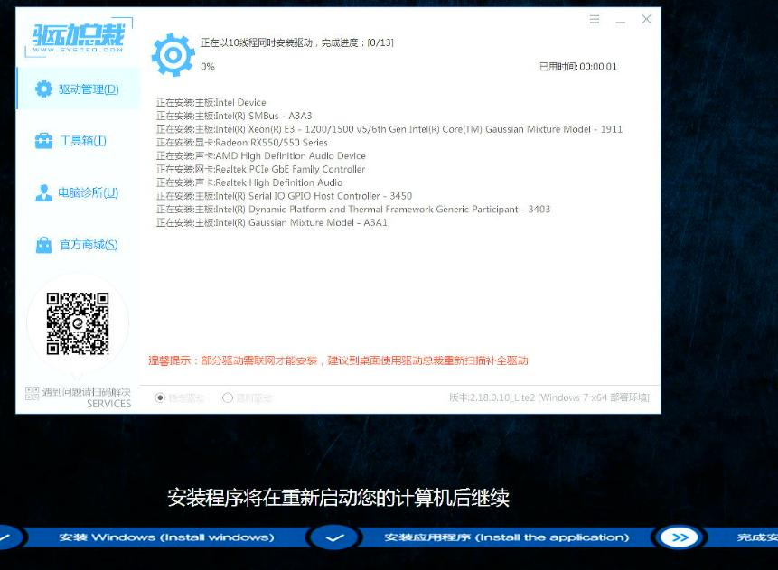
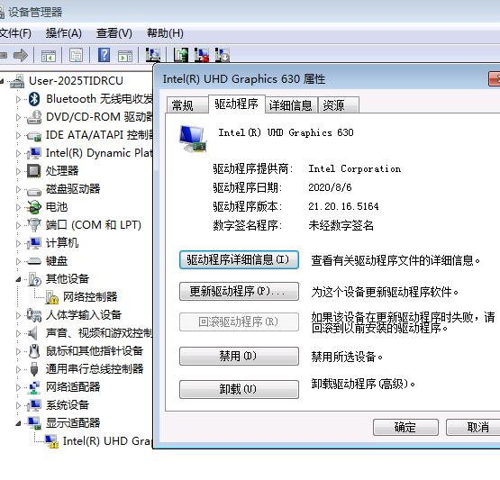

20250911
1. win7 on gen10
Verification step:
Install ubuntu 18.04
verify win10 vm
use the same configuration for installation of win7
2. gen 10 i9 win7(raw)
Use a rx550 gpu, for installation:

Close secure boot:

Get the bios mode:

enable csm:
BIOS版本M31K开头的激活代码 AmiSetupWriter.efi 0x802 0x1 （CSM改为允许）
如果M31K开头的BIOS，独显为RTX 16系列和20系列输入以下三条命令
AmiSetupWriter.efi 0x808 0x0
AmiSetupWriter.efi 0x80b 0x2
AmiSetupWriter.efi 0x80c 0x2

Create bios functionality disk:

Boot to uefi mode:

CSM enable:

Graphical related:

Ventoy for installing win7, could not start Ventoy.
3. h3c idv(verification)
legacy items. black screen, but could be accessed via todesk.


4. hardware installation
USB disk for installation :



选择重装系统:



进度:

导入驱动:

重启后：



Not OK with 21.20.16.5164:

5. 8100 verification
Use the same iso for installation.

See this uhd630 could be activated or not?